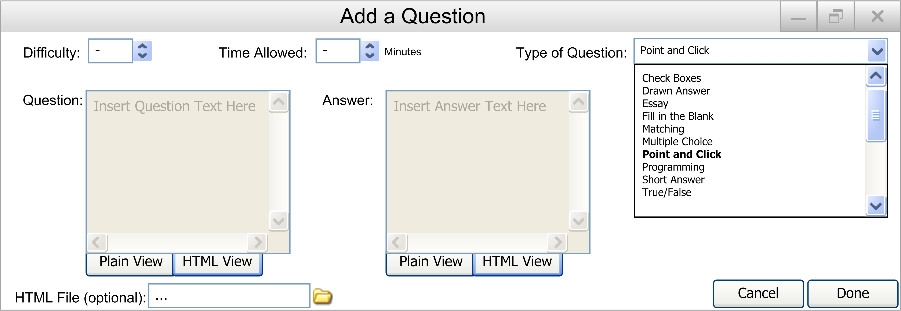
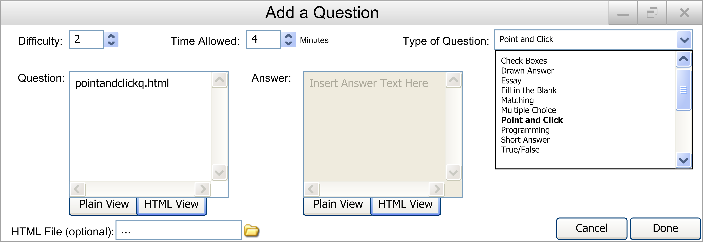
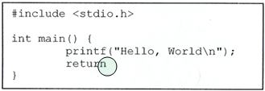

When the user wants to add a point and click question to the database, they select the Add Question item in the Edit submenu under Database in the main menu.
The following window is displayed, as shown in Figure 2.2.2.7.1.

Figure 2.2.2.7.1: Add Question to Database Screen
They should then select the Point and Click item under the Type of Question pulldown menu. Then the following will appear and should be filled out by the user:
- Difficulty: The difficulty of the question, from 1 to 5. A number can be entered in the box, or the up and down arrows can be used to adjust the number.
- Time Allowed: The time allowed for the question in minutes. A number can be entered in the box, with any value. A time of 0 will give the student unlimited time to answer the question.
- Type of Question: A drop down menu containing all of the possible question types.
- Question: The HTML file with the Point and Click question. This will most likely be just a picture, as there is no automated point and click functionality as of this release.
- Answer: An optional 2nd HTML file if the question file does not include grading.
- HTML File: The optional attached HTML file to replace the question. This allows for images, videos, etc. to be put into the questions. By clicking the link icon to the right of the text box, the user can browse for a file located on their computer.
There are also two buttons on the bottom right:
- Cancel: When the user presses this button, the user is returned to the main database screen, and no question will have been added.
- Done: When the user presses this button, the question will be put into the database as described. The user will then be returned to the main database screen.
Figure 2.2.2.7.2 is an example of a completely filled in Add Question screen:

Figure 2.2.2.7.2: Completed in Add a Question Screen
Figure 2.2.2.7.3 is an example of what a Question html file should look like:

Figure 2.2.2.7.3: Point and Click Question HTML file